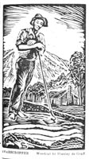

| |
||||

|
Research ProjectsDuring the NHP summer institute, participants carried out research projects at the Newberry Library. Their topics varied, as did their goals in conducting research. Some hoped to develop materials for classroom use, and others were simply interested in a particular topic for personal reasons. Openly exploratory and tentative in their conclusions, these essays are the tracings of teachers' engagement with the past and their desire for intellectual renewal. One of the most common threads in teachers' evaluations of the summer institute was that they learned just how difficult research can be. They experienced first hand—often for the first time in years—the frustration of spending day after day in the archive with nothing to show for their hard work. Then after modifying their question, they often struck a rich vein of documentation.Richard Mertz of Oak Park-River Forest High School wanted to do research on the post-World War I "red scare." He began with the question, "did employers use anti-radicalism as a way to undermine unions that were not particularly radical?" "After spending two straight days, eight hours each day, scanning microfilm at Harold Washington Library, I came to the conclusion that the job of a historian is tedious….I got frustrated. Everywhere I looked, I failed to find any interesting information. I realized that the answer to my question was 'yes,' management did use the Red Scare to attack all unions whether or not they were radical. There was no subtlety; I could offer no real insight into the topic."Then Rich changed course and started looking through the papers of the Industrial Relations Department of the Pullman Company. Suddenly there was plenty of subtlety. Why was a notoriously anti-union corporation creating an Employee Representation Plan? Why did employees appear to participate avidly in Pullman's programs? The question of anti-unionism and anti-radicalism become more complicated and compelling in light of these documents. (See Rich Mertz take his turn in the historian's chair, talking about the problems he had with his first phase of his project and how he arrived at the second phase. These clips are best viewed using Quicktime.) A different trajectory is visible in the report by Kathy Pozniak who teaches at Von Humbolt Middle School in Chicago. Kathy wanted to use the institute to find topics in American history that would appeal to the mainly Latino student body in her school. Initially she intended to do research on run-away slaves in the Caribbean and Mexico, but after some initial forays she focused on the latter. As she discovered, parsing out the history of Texas itself was a major part of the project, however, in that process she was able to find numerous references to south-bound run-aways. Kathy concluded that "the process of writing up the research helped me realize that a small event in history does not mean an unimportant event." The African Americans who escaped enslavement by crossing the Mexican border were part of a broader history of US-Mexico relations, Manifest Destiny, and Mexican Independence. In her evaluation of the institute, Kathy wrote that "It had been about 20 years (gasp) since I did this depth of research on a historical topic. It reminded me how frustrating it could be, but also how interesting and exiting." The essays published on this site are artifacts of this process.
|
|||